Home
Instalación servidor web Nginx
Para instalar el servidor nginx en Debian, primero actualizamos los repositorios y después instalamos el paquete correspondiente:
Actualizaremos con el siguiente comando: sudo apt update Instalaremos el paquete con: sudo apt install nginx Comprobamos que nginx se ha instalado y que está funcionando correctamente: 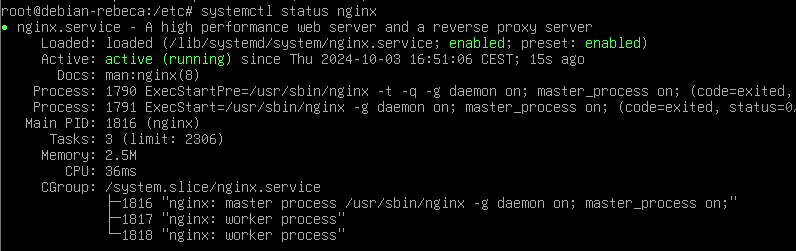
Crearemos la carpeta de nuestro sitio web o dominio: 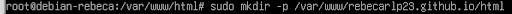
Clonamos el siguiente repositorio: 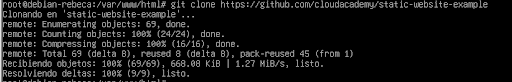
Haremos que el propietario de esta carpeta y todo lo que haya dentro sea el usuario www-data, típicamente el usuario del servicio web.
Y le daremos los permisos adecuados para que no nos de un error de acceso no autorizado al entrar en el sitio web: 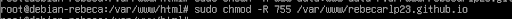
Comprobamos que funciona correctamente escribiendo esto: http://IP-maq-virtual Y debe salir esto: 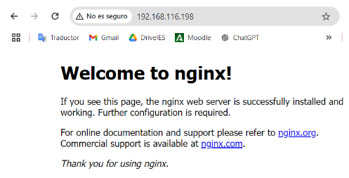
Configuración de servidor web NGINX
Creamos el siguiente archivo:
 Y de contenido escribimos lo siguiente:
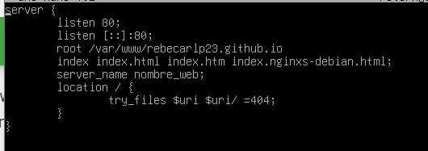
Y crearemos un archivo simbólico entre este archivo y el de sitios que están habilitados.
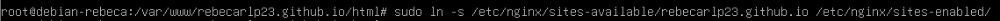
Una vez creado el archivo, reiniciamos nginx:
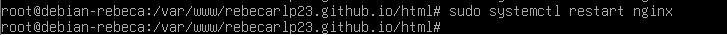
Y de contenido escribimos lo siguiente:
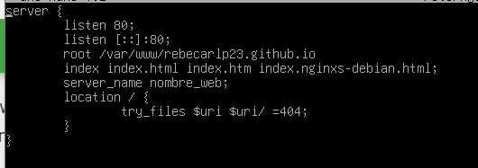
Y crearemos un archivo simbólico entre este archivo y el de sitios que están habilitados.
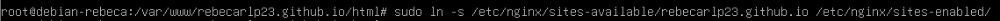
Una vez creado el archivo, reiniciamos nginx:
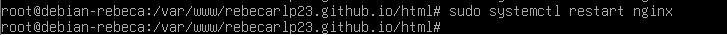
Configurar servidor SFTP en Debian Primero instalaremos los repositorios: 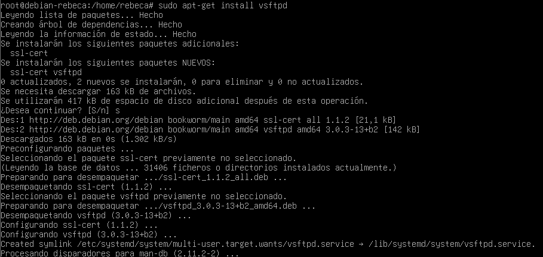 Ahora vamos a crear una carpeta en nuestro home: 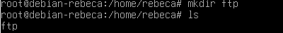
Ahora vamos a crear los certificados de seguridad necesarios para aportar la capa de cifrado a nuestra conexión 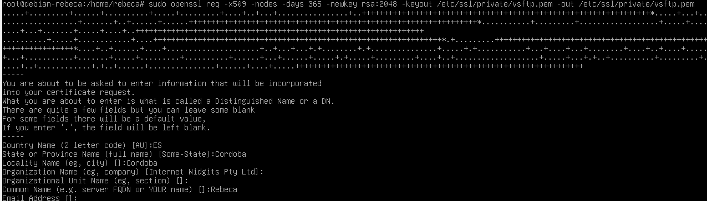
Ahora vamos a realizar la configuración de vsftpd. Se trata, con el editor de texto que más os guste, de editar el archivo de configuración de este servicio, por ejemplo con nano: sudo nano /etc/vsftpd.conf Buscaremos las siguientes líneas del archivo y las eliminaremos: 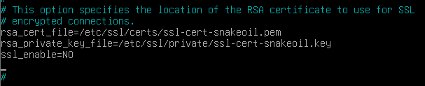
En su lugar añadiremos lo siguiente: 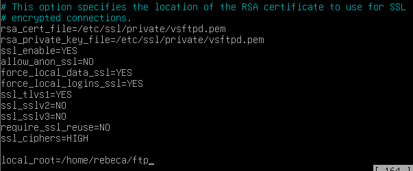
Guardamos y reiniciamos el servicio: 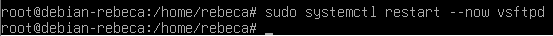
Tras acabar esta configuración, ya podremos acceder a nuestro servidor mediante un cliente FTP adecuado, como por ejemplo Filezilla Descargamos el cliente FTP en nuestro ordenador. 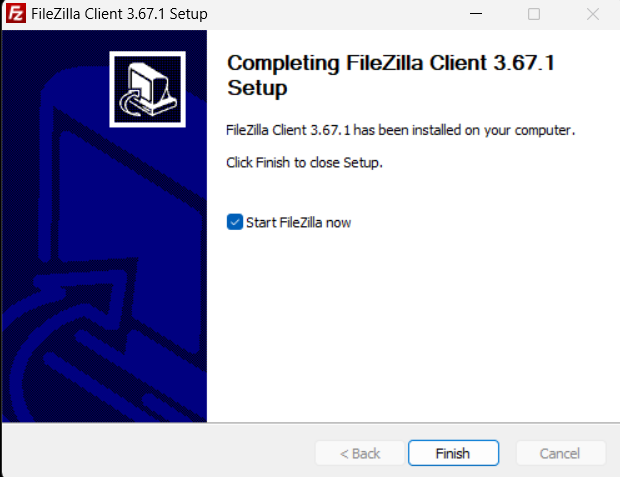
Introducimos los datos necesarios para conectarnos a nuestro servidor FTP en Debian: 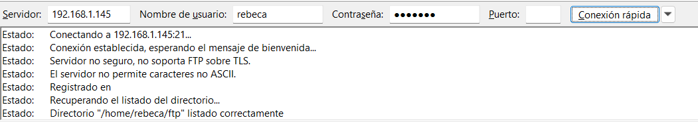
Nos conectaremos directamente a la carpeta que le habíamos indicado en el archivo de configuración /home/rebeca/ftp 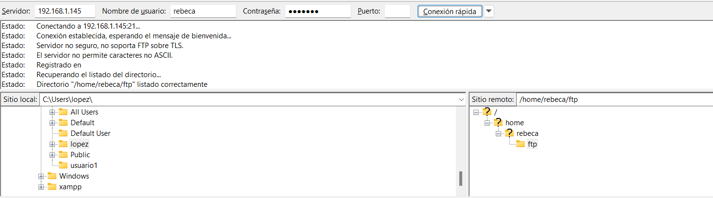
Una vez conectados, buscamos la carpeta de nuestro ordenador donde hemos descargado un archivo (en la parte izquierda de la pantalla) y en la parte derecha de la pantalla, buscamos la carpeta donde queremos subirla. 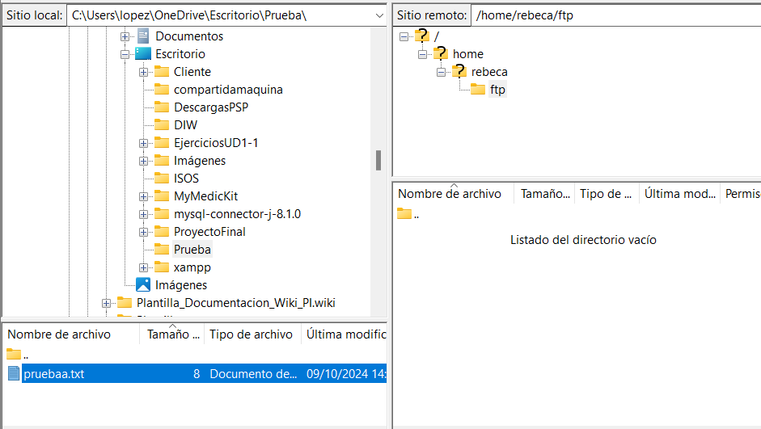
Con un doble click o utilizando botón derecho > subir, la subimos al servidor. 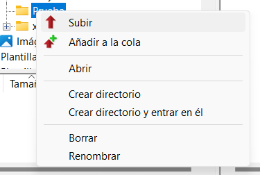
Vemos desde la consola que la transferencia ha sido correcta: 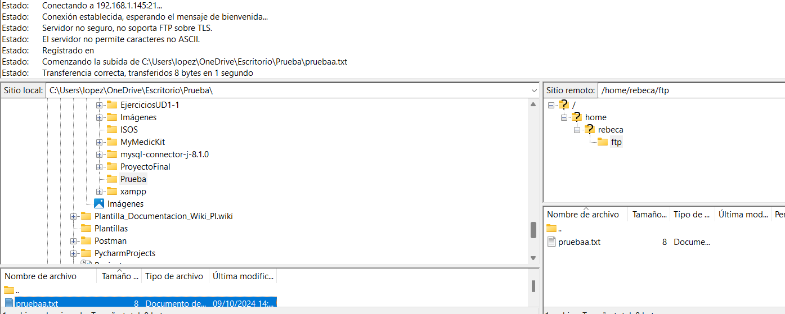
Redirección HTTP a HTTPS
Ahora vamos a habilitar HTTPS en tu servidor y redirigir automáticamente las solicitudes HTTP a HTTPS. Generaremos certificados SSL autofirmados que se utilizarán para habilitar HTTPS en tu servidor. Pondremos los siguientes comandos: sudo mkdir /etc/ssl/private 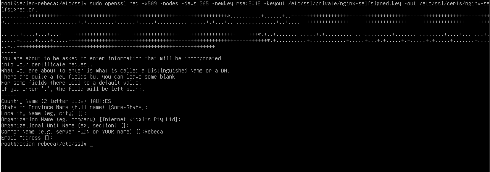
Creamos un archivo de parámetros Diffie-Hellman. Este archivo se usa para mejorar la seguridad de las conexiones SSL/TLS. Ejecútalo para generar el archivo: 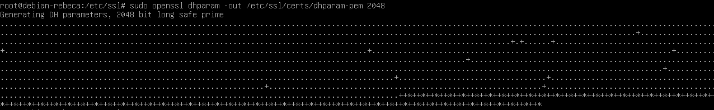
Configuramos Nginx para usar SSL. Ahora, necesitas editar el archivo de configuración de Nginx para habilitar HTTPS. Vamos a modificar el archivo de configuración del sitio web que creaste previamente en /etc/nginx/sites-available/nombre_web. 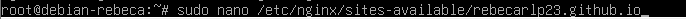 Modifica el archivo para incluir bloques de configuración para HTTPS: 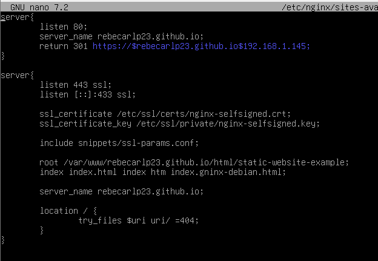
Y reiniciamos: sudo systemctl restart nginx
Para comprobarlo accede al sitio web a través de http://nombre_web. Deberías ser redirigido automáticamente a https://nombre_web.: 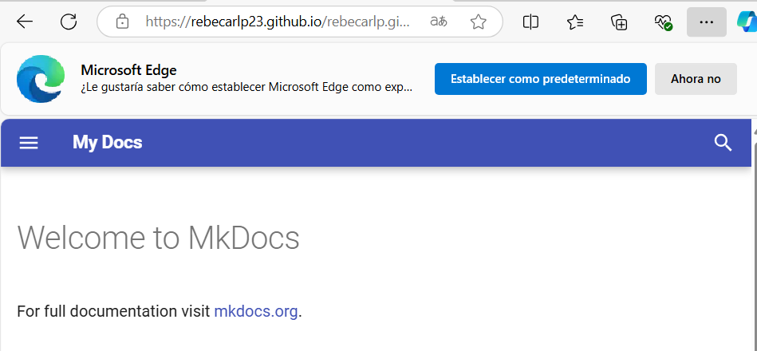